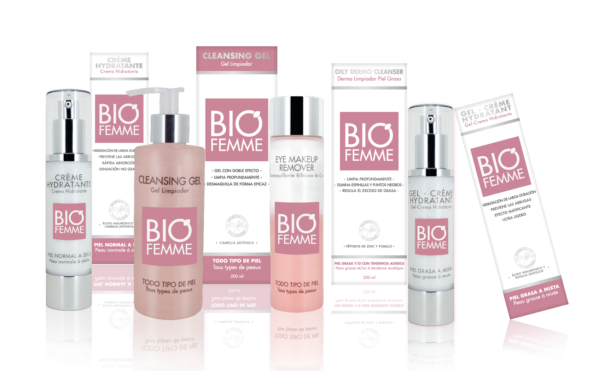

Norbert

El movimiento "cruelty-free" nació como respuesta a las pruebas en animales que durante décadas fueron un estándar en la industria cosmética. Hoy, cada vez más marcas certifican sus productos como libres de testeo animal, respondiendo a una demanda global de consumo más ético.
Esta tendencia va de la mano con la sostenibilidad: empaques reciclables, fórmulas veganas y cadenas de producción más transparentes. Las nuevas generaciones de compradoras valoran tanto el resultado del maquillaje como el proceso detrás de cada producto.
En Norbert nos sumamos a esta filosofía, priorizando marcas y proveedores comprometidos con prácticas responsables, para que cada compra sea también una decisión consciente.
← Volver a Noticias